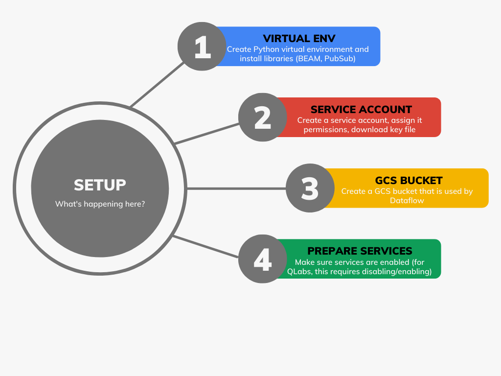
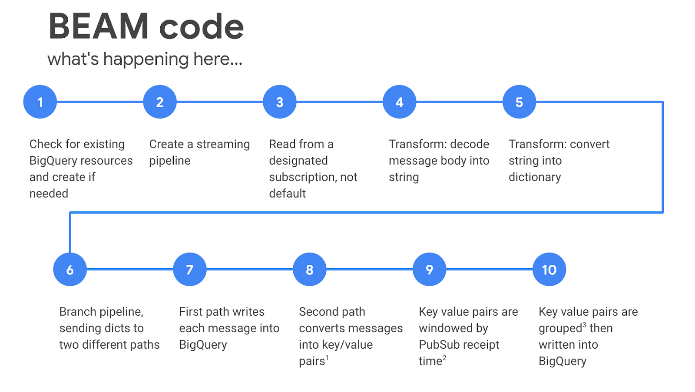
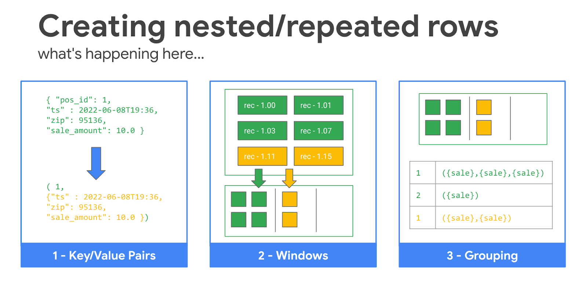

The best way to learn something is try it yourself. So we've turned a bunch of the demos our instructors do into Do-It-Now activities, where students can try each concept out in quick, bite-size activities.
If you are using these as part of an Instructor Led Training (ILT), make sure to listen to your instructor and coordinate your efforts with their direction.
Overview
We have 18 Do-It-Now activities for BigQuery concepts.
These activities are all prefixed with BigQuery.
Many of these activities will cost money
Sample data
Many of the activities use data in the roi-bq-demos.bq_demo dataset
Other activities rely on additional sample tables that need to be derived from the tables in the bq_demo dataset. You can use the directions found here to generate the required tables.
There is a much smaller dataset which will work with the demos: roi-bq-demos.bq_demo_small. Queries will be much faster with this dataset, so aren't as effective at illustrating query speed benefits.
Setting up
Log into Qwiklabs and start the Data to Insights Lab.
Using the provided credentials, open the Google Cloud Console, and navigate to the BigQuery UI.
Enter the query with subquery query into the BigQuery editor
Review the query - what does it do?
Examine just the subquery
Run just the subquery and note results (CMD-e)
Next, run the whole query a. It runs the subquery first, and generates an in-memory table b. It then runs the outer query against the in-memory table c. Run the query and check the results
Rather than using subqueries, you can use with clauses. This behaves effectively the same. Try running the with clause query in BigQuery
What if you like that subquery a lot, and would like to use it in many other queries? Rather than copy/paste over and over, you can create a view. A view is just a saved, shared subquery.
Run the create view query in BigQuery
Check out the view in the UI
Now try running the query view query, which queries the view
See the jobs you've run
Click on the history links at the bottom of the page and review the queries that you've run
Run the -- view up-to-date table query. This should show you the total number of orders per month, with values for Jan. and Feb.
Running a time travel query, finding results from specific time
Copy the -- view table with only initial load query from the SQL file in Github and paste it into your BigQuery editor.
Replace target with the time travel target value that was output in your Cloud Shell window. It should look like this: 1654541783
Run the query. This should show you the total number of orders per month, but from the table as it looked after it's initial load when only January data was stored.
Restore a previous version of the table to a new table
Copy the -- create restoration table query from the SQL file in Github and paste it into your BigQuery editor.
Replace target with the time travel target value that was output in your Cloud Shell window. It should look like this: 1654541783
Run the query. One the table has been created, check out the Details and Preview data. Verify that only January orders exist.
Setting up
Make sure you have the BigQuery console open.
Make sure you have the bigquery-public-data.noaa_gsod pinned.
In the Explorer pane, expand bigquery-public-data.noaa_gsod.
Working with sharded tables
Write a query that finds all the entries for stn 038110 in 1929
How would you write a query that finds all the 03110 entries for 1929, 1930, 1931?
Read and run the populate arrays explicitly query, and review the results
Read and run the populate arrays using array_agg query, and review the results
Array lengths
In the Explorer pane, drill down to bigquery-public-data.github_repos.commits.
Read and run the report array length query, and review the results.
Write a query to find all the rows where the length of the difference array is equal to five (hint, you can use the find by array length query from the git file).
UNNEST
Review and run the select basic array from array query. Review the results.
Click on the JSON tab in the Query results area, and note the structure of the results. There's an array with a single row object. That object has a single column, which is a four-element array.
Review and run the select table from array query. Review the results.
Click on the JSON tab in the Query results area, and note the structure of the results. There are four rows, each with one column which is a scalar value. Unnest flattens the array into a table.
Review and run the calculate average of array query.
Review and run the basic correlated cross join query. The CTE at the top is just creating an initial arrays table with two rows and two columns. Review the standard results output and the JSON output.
Review and run the comma correlated cross join query.
It turns out, that if you're doing a correlated cross join, you don't even need to explicitly do the UNNEST, it's done for you implicitly. Review and run the comma implicit unnest query.
Querying on array contents
Review and run the -- find row where num_array contains 2 - take 1 query. Review the results.
Edit the query, modifying the CTE so that the first row in the arrays table is [2, 2, 3, 4]. Re-run the query and note the results.
Edit the query to search for rows that have an 8 in the array. Run the query and review the results? Are they correct?
Run the -- find row where num_array contains 2 - take 2 query.
Run the -- find row where num_array contains 2 - take 3 query.
All three of these queries return the same results, but there are differences in performance on large datasets. Let's explore that.
Run each of the find commits that... queries, noting the time taken for each to run.
Setting up
Make sure you have the BigQuery console open.
View the nested_once table in your instructor's project
Find the total sales for the 8754 zip code by running the find sales for 6 months in 8754 from nested query (replace with the instructor's project name). Note the duration and data processed.
Run the find for 6 months in 8754 from nested/partitioned query (replace with the instructor's project name) and note the duration and data processed.
Run the find for 6 months in 8754 from nested/partitioned/clustered query (replace with the instructor's project name) and note the duration and data processed.
Setting up
Make sure you have the BigQuery console open.
Querying the partitioned table
Write and run a query to find all the March 2018 orders from the instructor's nested/repeated table, projecting all the columns except the customer email and phone number, and storing the results in a derived table in your class dataset.
Write and run a query to sum sales for AK customers orders in March 2018, using the full nested/repeated table. Note the query duration and bytes processed.
Write and run a query to sum sales for AK customers orders in March 2018, using the derived table. Note the query duration and bytes processed.
Schedule the query to run daily at 12.01am, overwriting the previous contents of the derived table.
Setting up
Make sure you have the BigQuery console open.
Review the roi-bq-demos.bq_demo.order_mv materialized view
Run the -- First query - exact query in one editor tab. This query will find the number of unique article titles in the 106B row wikipedia table
Open a 2nd editor tab, and run the -- Second query - approx query. This will approximate the number of unique article titles in the 106B row wikipedia table.
Compare results
Calculate the % difference in query execution time between the two queries
Calculate the % difference in reported number of unique titles
The following activities cover a range of relevant Data Engineering topics. Enjoy!
1. Overview
This activity is intended to illustrate a variety of techniques, including:
Managing and using PubSub with Python
Creating topics and subscriptions
Creating bytestring message bodies
Sending messages
Various BEAM tricks when processing streams of data
Decoding bytestring message bodies
Using one branch for writing each event into a BigQuery table
Using a second branch for aggregating rows into windows and writing windows to BigQuery
Writing nested/repeated data from BEAM to BigQuery
Reading the end of window time
2. Setting up
Open the Google Cloud console
Activate Cloud Shell
Click the button to open Cloud Shell in a new browser window
Clone the gcp-demos repository into Cloud Shell with the following command:
git clone https://github.com/roitraining/gcp-demos.git
cd gcp-demos/dflow-bq-stream-python
Run the setup.sh script, providing the name of the service account you want the demo code to use. For example (with demo-sa as the service account name):
. ./setup.sh demo-sa
Take a few minutes to review and understand the setup script. The diagram below indicates what's happening in the script.

3. Starting the pipeline
Make sure that you are in the dflow-bq-stream-python directory in your Cloud Shell window.
Deploy the Dataflow job with the follow command (you'll review the code in a minute):
Take a few minutes to review and understand the code. The diagrams below highlight some key features


7. Check out the results
In the console, go to Dataflow and click on the running job.
Click on the top node of the pipeline diagram. Wait until you see metrics showing the number of received messages on the right-hand side (it takes a while for the cluster to spin up and start processing messages).
Explore the pipeline and the execution metrics in Dataflow.
In the console, go to BigQuery and explore your new dflow_demo dataset. Check out the DETAILS and PREVIEW section for both of the tables in that dataset. Note that the nested table has one row per window, with an array of structs, each struct representing one message for that window. Note also that the DETAILS section shows the rows in in the streaming buffer and not the BigQuery storage service.
8. Clean up
Stop the Dataflow job via the console
Stop the sending of messages by closing the Cloud Shell window